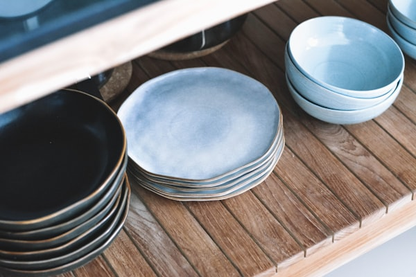
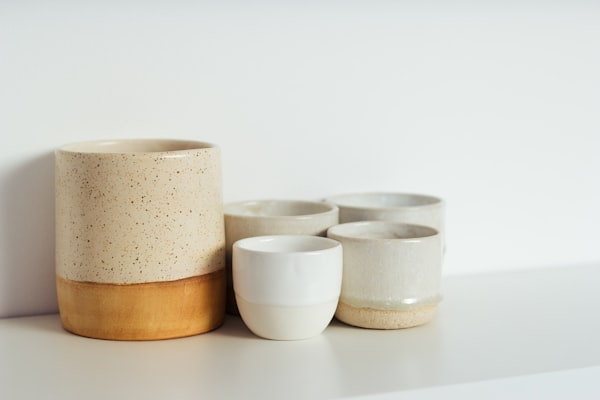
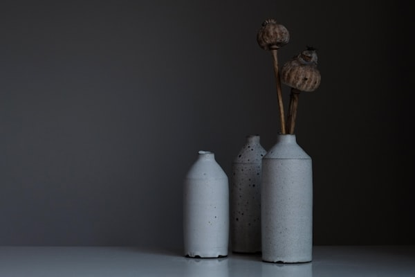

HÀNH TRÌNH
Từ tình yêu với đất sét và lửa nung – chúng tôi cùng nhau tạo nên những tác phẩm mang linh hồn Bát Tràng.
Nội dung hành trình
01/2018
Khởi Đầu Từ Tình Yêu
Từ niềm đam mê với nghề gốm truyền thống, hai vợ chồng bắt đầu học nghề tại làng Bát Tràng. Mỗi ngày là hàng giờ đồng hồ ngồi bên bàn xoay, tìm hiểu từng kỹ thuật tạo hình.
06/2019
Mở Xưởng Riêng
Sau hơn một năm học hỏi, chúng tôi mạnh dạn thuê mặt bằng nhỏ và mở xưởng gốm đầu tiên. Chỉ có 2 người và một lò nung nhỏ, nhưng đầy nhiệt huyết.
03/2020
Vượt Qua Đại Dịch
COVID-19 khiến nhiều xưởng gốm phải đóng cửa. Chúng tôi chuyển sang bán hàng online và điều đó lại mở ra cơ hội tiếp cận khách hàng toàn quốc.
2021 – Hiện Tại
Phát Triển & Lan Rộng
Phúc Gia Tiên ngày càng lớn mạnh với hàng trăm sản phẩm thủ công và hàng nghìn khách hàng tin tưởng trên khắp Việt Nam.

Quá trình tạo hình

Vẽ thủ công

Nung 1.200°C

Hậu trường xưởng

Lần đầu thất bại

Thành quả nghề
Câu chuyện của Phúc Gia Tiên bắt đầu từ một buổi chiều tại làng Bát Tràng, khi hai vợ chồng tình cờ ghé thăm xưởng gốm của một nghệ nhân lớn tuổi. Nhìn đôi tay khéo léo nhào nặn đất sét, chúng tôi bị cuốn hút ngay lập tức.
Từ đó, chúng tôi quyết định học nghề, rồi mở xưởng, rồi xây dựng thương hiệu Phúc Gia Tiên với sứ mệnh: gìn giữ nghề gốm thủ công truyền thống và đưa sản phẩm đến mọi gia đình Việt.
"Mỗi chiếc bình, mỗi nét vẽ – là một phần tâm huyết của chúng tôi gửi vào đó."